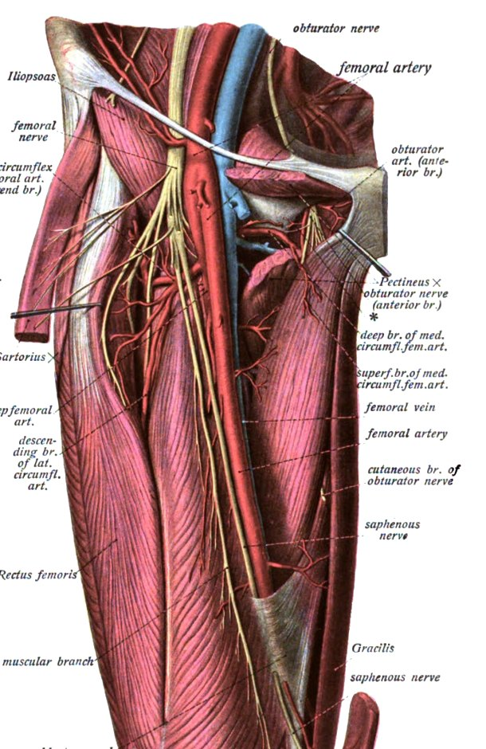
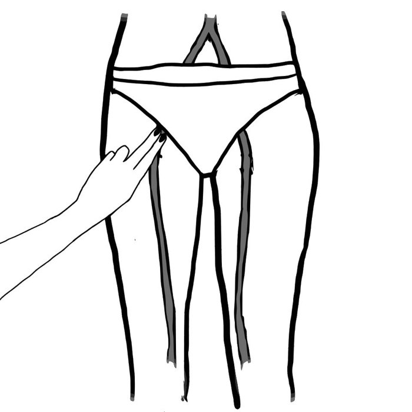
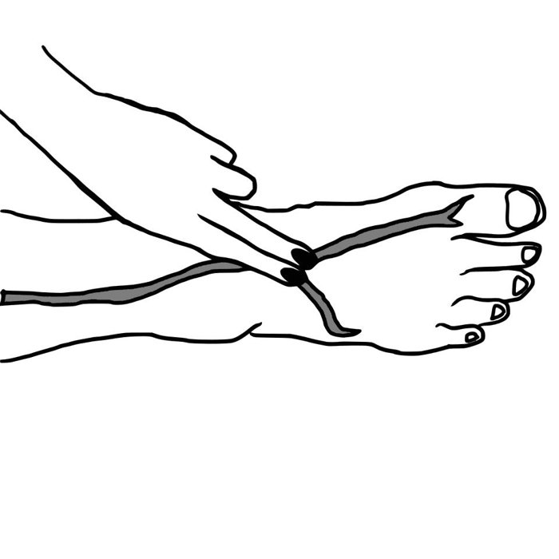
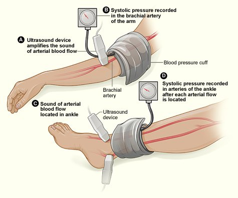
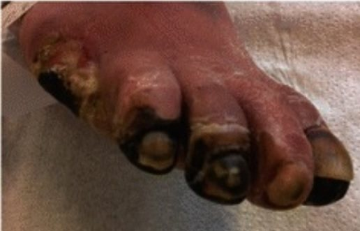
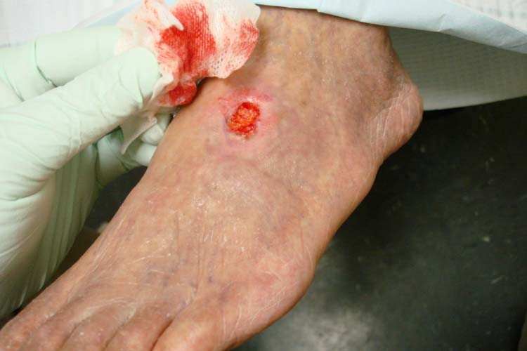
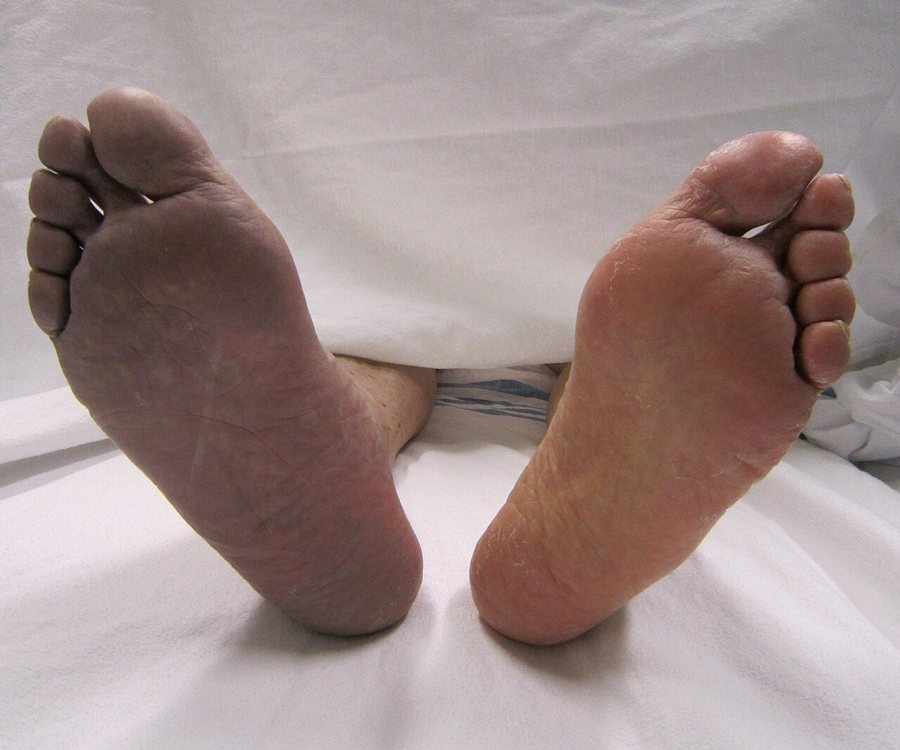
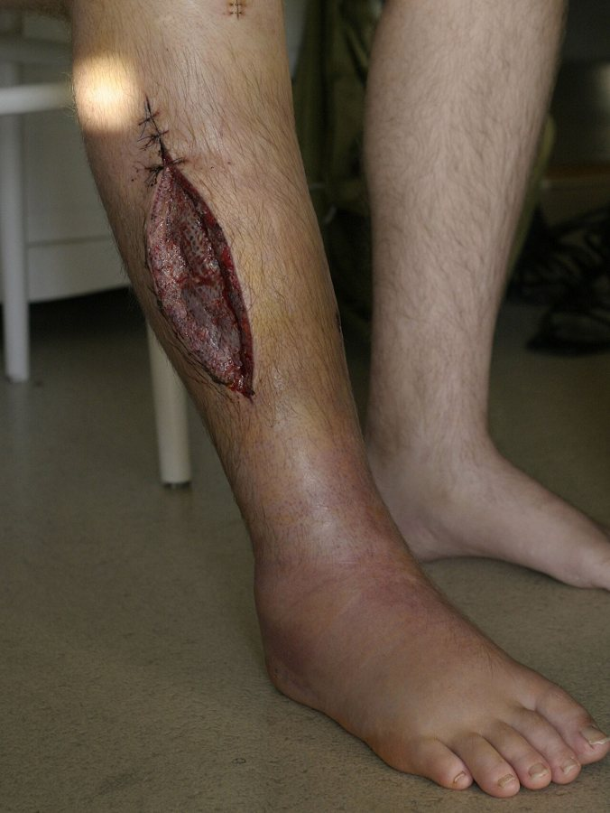

מחלות כלי דם פריפריים
צליעה לסירוגין, איסכמיה כרונית מאיימת על הגפה ואיסכמיה חריפה: בדיקה, ABI, טיפול ועקרונות הרה-וסקולריזציה
בסוף המפגש תדעו
- לתאר את הספקטרום של מחלת עורקים פריפרית: בלי תסמינים, צליעה לסירוגין, איסכמיה כרונית מאיימת (CLTI) ואיסכמיה חריפה
- לבצע בדיקה וסקולרית של הרגל ולחשב ולפרש מדד קרסול-זרוע (ABI)
- להכיר את הטיפול התרופתי ושינוי אורח החיים שכל מטופל צריך לקבל
- לדעת מתי מטפלים פולשנית בצליעה ומתי ב-CLTI. להכיר את עקרונות המעקף והטיפול האנדווסקולרי
- לזהות איסכמיה חריפה של הגפה, לסווג את חומרתה ולדעת מה עושים מיד
מחלה מערכתית שמתגלה ברגליים
- מה זה: היצרות או חסימה של עורקי הגפיים, בעיקר ברגליים. הסיבה השכיחה: טרשת עורקים
- רבים מהחולים סובלים גם ממחלה כלילית ומוחית. לכן הסיכון הגדול הוא אוטם ושבץ, לא רק הרגל
- שכיחות: 4–7% מתחת לגיל 50, 15–20% מעל גיל 80
איפה נחסמים העורקים?

👆 לחצו על מספר בציור כדי לקרוא עליו
מחלה אאורטו-איליאקית: צליעה בישבנים ובירכיים. שכיחה במעשנים. דופק פמורלי חלש או חסר. Leriche: צליעה, היעדר דופק פמורלי ואין-אונות. טיפול: אנדווסקולרי או מעקף אאורטו-פמורלי.
מתחת ל-inguinal ligament. כאן ממששים את הדופק הפמורלי. מחלה מקומית כאן מטופלת בניתוח פתוח: אנדארטרקטומיה וטלאי, שעדיפים על טיפול אנדווסקולרי. זה גם אתר הדקירה השכיח לצנתור.
מחלה פמורו-פופליטאלית: צליעה בשוק. רוב החולים עם צליעה סובלים ממחלה במקטע אחד. הקולטרלים מה-profunda femoris יכולים לפצות על חסימה.
המקום השכיח ביותר לטרשת ברגל: ה-SFA הדיסטלי ביציאה מהתעלה. הגיד של ה-adductor magnus לוחץ על העורק ומונע ממנו להתרחב.
מצליעה ועד כאב במנוחה
הבדיקה הווסקולרית של הרגל
הסתכלות
- חום העור וצבעו, נשירת שיער, עור יבש, דלדול שרירים
- אודם בהורדה (dependent rubor) וחיוורון בהרמה
- כיבים ונמק (גנגרנה)
מישוש והאזנה
- דפקים: femoral, popliteal, dorsalis pedis ו-posterior tibial. השוו בין הצדדים
- דופק בולט בבטן, במפשעה או בברך: חשד למפרצת
- האזנה לאוושה בצוואר, בבטן ובמפשעה
- נוירופתיה: מונופילמנט. בכיב: האם מגיעים לעצם (probe-to-bone)


מדד קרסול-זרוע (ABI)
- איך: שרוול לחץ דם ודופלר ידני. הלחץ הסיסטולי הגבוה בקרסול (DP או PT) חלקי הלחץ הסיסטולי הגבוה בזרוע
- תקין: 0.9–1.2
- מתחת ל-0.9: אבחנה של מחלה פריפרית. רגישות 79–95%, סגוליות מעל 95%
- מתאים ל-CLTI: ABI מתחת ל-0.5, לחץ בקרסול מתחת ל-50 ממ״כ בכאב במנוחה או מתחת ל-70 ממ״כ באובדן רקמה
- מעל 1.3: עורקים מסוידים שלא נלחצים (סוכרת, כליות, גיל). התוצאה תקינה באופן כוזב. מודדים לחץ באצבע: מתחת ל-30 ממ״כ ריפוי לא סביר, מעל 60 ריפוי סביר
- צליעה עם ABI תקין: ABI אחרי מאמץ. ירידה של 20 ממ״כ או 20% בלחץ בקרסול תומכת באבחנה

מבדיקה במעבדה הווסקולרית ועד אנגיוגרפיה
בדיקות לא פולשניות
הדמיה לפני התערבות
טיפול תרופתי ואורח חיים
קודם הליכה, אחר כך אולי צנתור
- אימון הליכה: הטיפול הלא פולשני היעיל ביותר. 45–60 דקות, עד שהכאב מופיע. מפוקח עדיף על אימון בבית
- צילוסטזול 100 מ״ג פעמיים ביום, ניסיון של 3 חודשים. אסור באי ספיקת לב. תופעות: כאב ראש, שלשול, דפיקות לב
- בלי תסמינים: אין טיפול פולשני, גם אם ההדמיה מראה חסימה
CLTI: הזמן הוא רקמה
- תמותה של 50% ב-5 שנים וסיכון גבוה לקטיעה
- WIfI: מדרגים פצע (W), איסכמיה (I) וזיהום בכף הרגל (fI), כל אחד בציון 0–3. השילוב נותן שלב קליני I–IV
- סיכון לקטיעה בשנה לפי שלב: 0% בשלב I, 8% ב-II, 11% ב-III, 38% ב-IV
- PLAN: מחליטים לפי המטופל (סיכון ותוחלת חיים), הגפה (WIfI) והאנטומיה (GLASS)
- פצע יציב: יש זמן לשפר את המצב הרפואי. כאב במנוחה או פצע שמתקדם: לא מחכים, אלא בתעוקה לא יציבה או אי ספיקת לב לא מאוזנת
- תוחלת חיים קצרה או מטופל מרותק: לשקול טיפול פליאטיבי או קטיעה ראשונית


מעקף או טיפול אנדווסקולרי?
- בלון, סטנט או אתרקטומיה דרך דקירה בעורק
- הרדמה מקומית, מעט דימום ומעט עומס פיזיולוגי
- פחות עמיד: היצרות חוזרת שכיחה, בעיקר בנגעים ארוכים ומסוידים
- הצינור הטוב ביותר: great saphenous vein מקטע אחד
- פתיחות ב-5 שנים: כ-75% ל-popliteal artery מעל הברך, 69% ל-tibial arteries, 59% לכף הרגל
- 20–45% מהחולים בלי וריד מתאים
- מעקף אאורטו-פמורלי: תחלואה כ-30%, תמותה 0.8–2.3%
- חולה בסיכון גבוה: מעקף אקסילו-פמורלי או פמורו-פמורלי. פחות עמיד, פחות מסוכן
- common femoral artery: אנדארטרקטומיה וטלאי
איסכמיה חריפה של הגפה
- הפסקה פתאומית של זרימת הדם. אחרי 6 שעות של איסכמיה קשה יכול להיגרם נזק בלתי הפיך לשריר ולעצב
- תמותה סביב הניתוח 20–40%, אובדן גפה 12–50%
- ששת ה-P: כאב, היעדר דופק, קור, נימול, חיוורון ושיתוק
- גבול הקור ודפקים שנשמרו מעליו מראים איפה החסימה. משווים לרגל השנייה ובודקים בדופלר עורקי וורידי

סיווג Rutherford ומה עושים
תסמונת מדור ופגיעת רה-פרפוזיה
- השריר שהיה באיסכמיה מתנפח בתוך המדורים של השוק. רגל שנראית בסדר עדיין בסכנה
- סימנים: מדורים מתוחים, כאב בתנועה פסיבית, ירידה בתחושה (בעיקר בין הבוהן לאצבע השנייה בגב כף הרגל), חולשה. סימן אחד מספיק: פסיוטומיה של 4 המדורים מיד
- באיסכמיה קשה וממושכת עושים פסיוטומיה מונעת. באיסכמיה קצרה או קלה: בדיקות חוזרות ותכופות
- מעקב: מוניטור, נוזלים, תיקון חמצת ואשלגן שמשתחררים מהשריר, בדיקות נוירו-וסקולריות חוזרות
- ממשיכים נוגדי קרישה: סיכון לפקקת חוזרת עד 30%
- מחפשים את המקור: א.ק.ג, אקו לב, CTA של החזה, הבטן והאגן

מחקרים שכדאי להכיר
1,830 חולי CLTI. כשיש great saphenous vein מתאים: אירוע מז׳ורי בגפה או מוות ב-42.6% אחרי מעקף לעומת 57.4% אחרי טיפול אנדווסקולרי. בלי וריד מתאים: 42.8% לעומת 47.7%, בלי הבדל מובהק
Farber A et al. N Engl J Med 2022;387:2305-16481 חולי CLTI עם מחלה פמורו-פופליטאלית. קטיעה גדולה או מוות: 66% בבלון רגיל, 60% בבלון מצופה תרופה, 58% בתומכן מצופה. ההבדלים לא מובהקים: אין יתרון קליני לטכנולוגיה היקרה
Bradbury AW et al. BMJ 2025;388:e080881792 חולים עם סוכרת סוג 2 וצליעה. סמגלוטייד 1 מ״ג בשבוע במשך 52 שבועות שיפר את מרחק ההליכה המרבי לעומת אינבו (יחס טיפול 1.13). עד היום מעט טיפולים שיפרו את התפקוד בחולים האלה
Bonaca MP et al. Lancet 2025;405:1580-93עדכון ראשון מאז 2016, בהשתתפות 11 איגודים, כולל איגוד כלי הדם (SVS). ההמלצות מכסות את כל הספקטרום: בלי תסמינים, צליעה, CLTI ואיסכמיה חריפה. נוסף פרק על טיפול מקיף בחולה
Gornik HL et al. Circulation 2024;149:e1313-e1410חמישה דברים לקחת למחלקה
- מחלה פריפרית היא מחלה מערכתית: הסכנה הגדולה היא אוטם ושבץ. סטטין, נוגד טסיות והפסקת עישון לכולם
- בודקים דפקים בשתי הרגליים ומודדים ABI. מתחת ל-0.9: מחלה. מעל 1.3: עורקים מסוידים, מודדים באצבע
- צליעה: אימון הליכה ותרופות. התערבות רק כשהחיים משתבשים
- כאב במנוחה או פצע שלא נרפא: CLTI. מעריכים לפי WIfI ולא מחכים
- רגל קרה, חיוורת ובלי דופק: הפרין מיד, סיווג Rutherford ופנייה דחופה לכירורג כלי דם